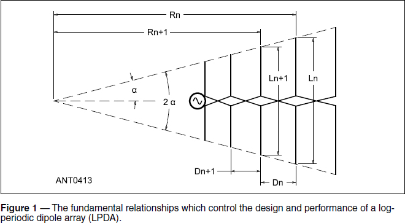
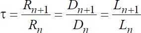
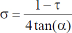
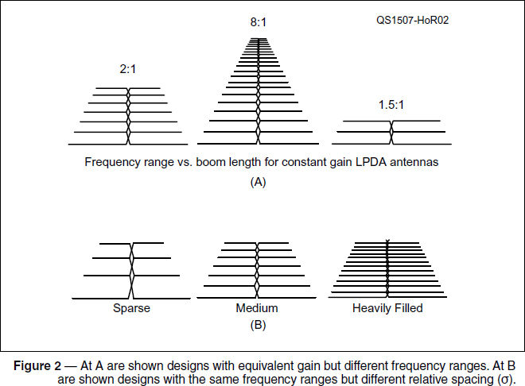
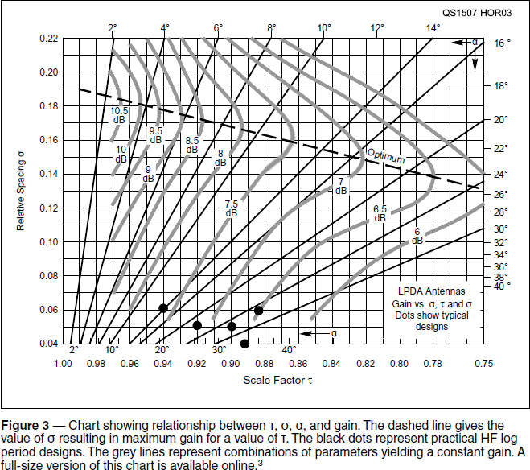

Experiment #150 — Log-periodic Basics
The standard design for rotatable directional ham antennas has been the Yagi-Uda array, known today just as “the Yagi,” nearly since its introduction in the late 1920s.1 Chester Buchanan, W3DZZ, added parallel LC circuits, aka “traps,” to dipoles and Yagis in 1955, putting rotatable directivity on 14 Mc and up within reach of the average station builder.2
Then came 30, 17, and 12 meters. Hams wanted “pointable gain” on these bands, and that changed their antenna requirements dramatically. Suddenly, the log-periodic became an all-bands-on-one-boom solution.
Frequency Independence
One of the common claims for log-periodic antennas, most commonly a Log-Periodic Dipole Array (LPDA), is that they are frequency-independent. Why so? The fundamental idea (somewhat oversimplified) is that by defining an antenna entirely in terms of angles and ratios, it will behave consistently when scaled to any frequency. This is related to the notions of self-similarity and scale-invariance. If the antenna’s structure remains consistent when scaled by some factor, the antenna’s behavior with frequency turns out to be periodic (repeating) according to the logarithm of that factor. Thus the name, log-periodic.
In its most common amateur form, the LPDA consists of a set of linear λ/2 dipoles covering the lowest to highest frequency of the antenna’s range, which is usually one octave at HF from 14 to 30 MHz. (Three octave ranges of 3 – 30 MHz are real monsters!) Tennadyne (www.tennadyne.com) makes HF logs and a five-octave 50 – 1300 MHz model.
So, where are the ratios? The three primary parameters of LPDA design are:
■ Apex angle, α (alpha), which controls the shape of the triangular LPDA outline
■ Scale factor, τ (tau), which controls the ratio between spacing and length of adjacent elements
■ Relative spacing, σ (sigma), which controls how many elements fill the triangular outline
These three parameters completely define the shape and internal structure of an LPDA, whether it is intended for use at HF, VHF, microwave, or light. An LPDA designed from the same three parameter values will look the same at any scale.
The scale factor, τ, captures the relationship of L, R, and D for the antenna elements as illustrated in Figure 1:


As τ increases, the elements get farther apart and the lengths of adjacent elements differ more.
The three parameters are related by the following equation:

By picking values for two of the parameters, the third can be determined — a lot like Ohm’s Law.
Building a Log
First, we define the frequency range to be covered to determine longest and shortest dipole lengths (typically resonant a few percent outside the desired range). Then, we pick a boom length. This sets the overall size of the triangle and determines τ. Next, we have to specify how much “ripple” we can tolerate in the antenna’s behavior over that range. That determines how many elements will fill the triangle. We do this by choosing a value for σ or by specifying the number of elements. Figure 2 shows some examples of antennas which all have the same gain but cover different frequency ranges, or that have the same frequency ranges and different element spacings.

As a practical matter, we use charts or software to design the antenna. Figure 3 shows the most common chart used for log-periodic design. On the horizontal axis for τ, the triangle gets “pointier” toward the right. On the vertical axis for σ, toward the top there are more and more elements packed into the triangle. The slanted straight lines show different values for the apex angle, α.

Overlaid on top of the parameter scales are the curved grey lines. As on a topographic map, these represent combinations of the three parameters which result in the same values of gain, labeled for each line. The dotted line running across all of the curves shows the value of σ required to obtain the maximum gain for a particular value of τ. (This chart is based on a particular length-to-diameter ratio for the dipoles and characteristic impedance of the antenna.) Using the optimum value usually results in an antenna too large to be practical but typical designs (represented by black dots at the bottom of Figure 3) have acceptable performance.
The program LPCAD by Roger Cox, WBØDGF, is a more practical method of designing your own antenna (wb0dgf.com/LPCAD.htm). Using this software, after establishing the antenna’s frequency range, you can enter values for τ and σ directly to see the results. (This is an easy way to find out why the optimum value of σ is impractical.) Or you can enter boom length and number of elements, which is a much more practical way of designing a log-periodic!
Feeding the Log
The LPDA is fed from the forward end of the array at the triangle’s apex. For frequencies toward the middle or low end of the antenna’s range, the “front” dipoles are very short compared to λ/2, and so will have a high impedance. A traveling wave develops as the signal moves along the transmission line toward the longer dipoles until it encounters the dipoles close to resonance, which are excited by the wave and radiate its energy. This active region moves back and forth with the operating frequency.
Phase reversal is key to the antenna’s performance. If each successive dipole is fed out of phase with the adjacent dipoles, the array develops a back-fire pattern to the front of the array to the left in Figure 1. If phase is not reversed — a common error made by first-time log-periodic assemblers, such as myself — radiation is in the end-fire direction to the back of the array, resulting in poor SWR and gain.
Feeding successive elements out of phase can be accomplished by constructing the boom from a pair of conductive tubes insulated from each other forming a parallel conductor line. The feed line runs through one tube and is connected to the parallel conductors at the front of the array. Another method, more common in smaller TV antennas and in really large military or commercial LPDAs, is to insulate all of the elements from a single supporting boom and use crisscrossing straps to connect all of the elements.
Filling Your Log Book
This column just scratches the surface of log-periodic and frequency-independent antenna design. There are dozens of designs in common use from MF through mm-wave as described in The ARRL Antenna Book and numerous other references.4, 5 Try downloading a log-periodic manual online and entering the element lengths and spacings to see what value you obtain for σ, τ, and α, then find where that design falls on the chart. You’ll never look at a TV antenna the same way again!
References
1The first amateur to use a Yagi was 1CCZ in 1928. His neighbors thought it was either a Ferris Wheel, a dirigible, or a ship (“Strays,” QST, Oct 1928). The Yagi was described a few months earlier: H. Yagi, “Beam Transmission of Ultra Short Waves,” Proc. IRE, Jun 1928, Vol 26, pp 715 – 741.
2Buchanan, C., W3DZZ, “The Multimatch Antenna System,” QST, March 1955, p 22.
3All Hands-On Radio experiments are available to ARRL members at www.arrl.org/hands-on-radio.
4The ARRL Antenna Book, 22nd edition, Chapter 7, ARRL.
5Johnson & Jasik, Antenna Engineering Handbook, 2nd edition, Chapter 14, McGraw-Hill.